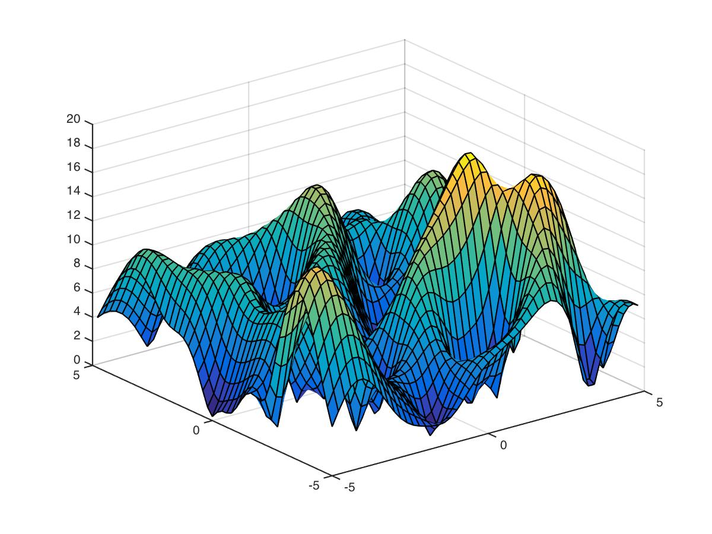
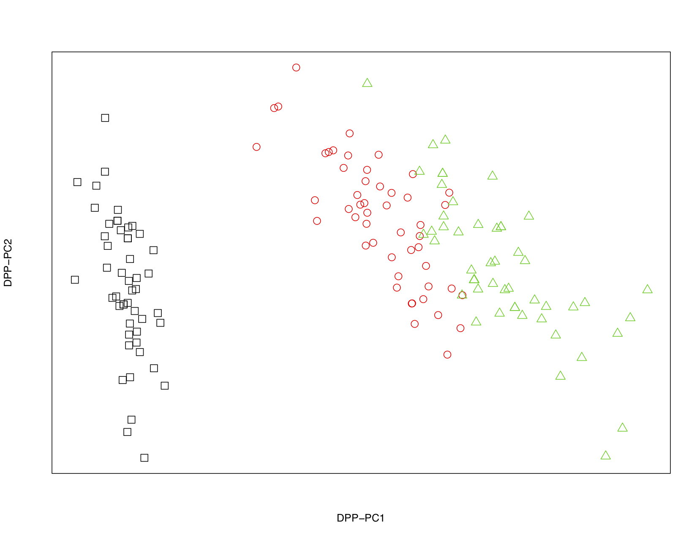
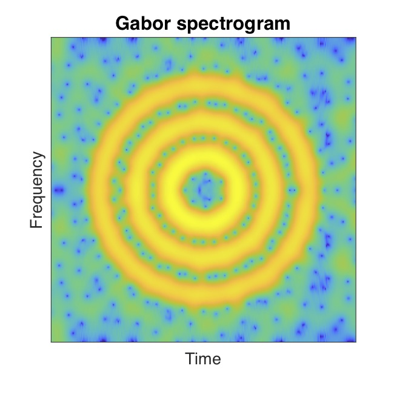
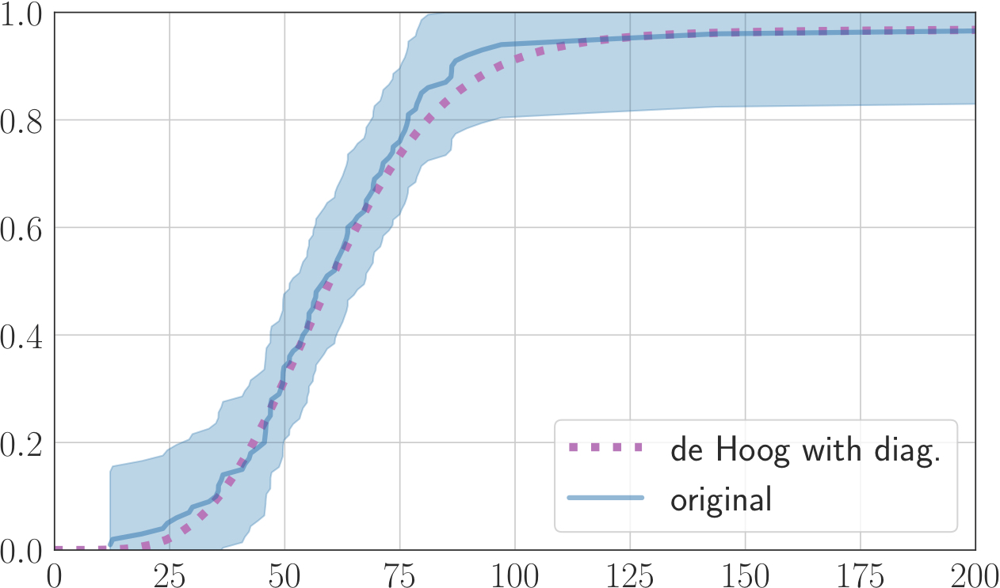
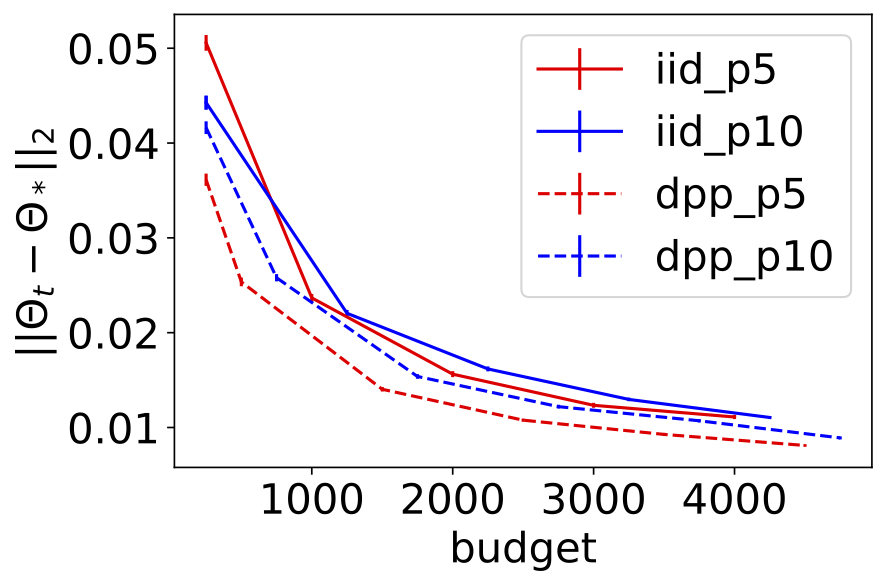
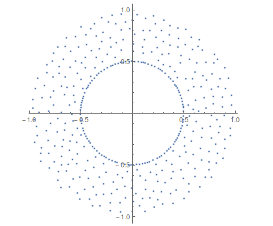
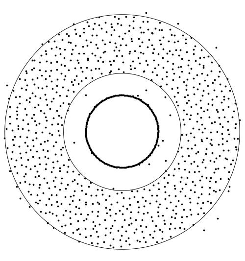

Home Page of Subhro Ghosh

Subhro Ghosh
National University of Singapore
Department of Mathematics
Dept of Statistics and Data Science
NUS AI Institute
Institute of Data Science
Singapore
Email:
subhrowork (**at**) gmail.com
matghos (**at**) nus.edu.sg
Research | Recognitions | Editorial | Selected & recent works | Publications | Teaching | Students & postdocs | Grants & organisation | Seminar | Gallery
About me
I am an associate professor at the National University of Singapore and a faculty affiliate at the NUS AI Institute and the Institute of Data Science, NUS. I am broadly interested in stochastics, focussing on problems from statistical physics and the math of data, and their interactions. Before joining NUS, I was a post doc at Princeton University, and prior to that I obtained my PhD from the University of California, Berkeley under the supervision of Yuval Peres. Earlier, I received my Bachelor in Statistics and Master in Mathematics degrees from the Indian Statistical Institute. My work is generously supported in part by the Singapore MOE Tier II Grant 'Complex structures in Statistical Physics and the Math of Data', and recognised as a Finalist for the Bell Labs Prize, 2022.
Research
I am broadly interested in stochastics, focussing on problems from statistical physics and the math of data, and their interactions. These encompass constrained stochastic systems and their applications, including problems of learning under complex structure (e.g., latent symmetries or community structure), dimension reduction, sampling and optimization, statistical networks and signal processing. Key paradigms include determinantal processes (DPP), strong Rayleigh measures and negative dependence, multi reference alignment (MRA), maximum likelihood under constraints, generative priors, Gaussian random fields and stochastic geometry. The investigation of these problems naturally brings together a wide array of tools and techniques, including probability, harmonic and complex analysis, persistent homology and the theory of group representations.
For more on my research, please refer to Selected & recent works and my full list of Publications.
Selected recognitions
- Finalist for the Bell Labs Prize, 2022
- Singapore MOE Tier II Grant, 2022 (~ US$ 500 K)
Complex structures in Statistical Physics and the Math of Data
- Gold Medal for M.Math., Indian Statistical Institute
- Gold Medal for B.Stat., Indian Statistical Institute
- AMS Simons Travel Grant
Editorial
- Advances in Applied Probability
- Journal of Applied Probability
Selected and recent works
- Gaussian determinantal processes: A new model for directionality in data,
with P. Rigollet,
Proceedings of the National Academy of Sciences (PNAS), vol. 117, no. 24, pp. 13207--13213
(Direct Submission)
article
- Sparse Multi-Reference Alignment: Phase Retrieval, Uniform Uncertainty Principles and the Beltway Problem, with P. Rigollet
Foundations of Computational Math. (FoCM) 23, no. 5 : 1851-1898
preprint
-
Small coresets via negative dependence: DPPs, linear statistics, and concentration,
with R. Bardenet, H. Simon-Onfroy, H.S. Tran
Spotlight at NeurIPS 2024
preprint
-
Determinantal point processes based on orthogonal polynomials for sampling minibatches in SGD,
with R. Bardenet, M. Lin
Spotlight at NeurIPS 2021
Advances in Neural Information Processing Systems , 34, 16226-16237
preprint
- Approximate Gibbsian structure in strongly correlated point fields and generalized Gaussian zero ensembles, with U. Gangopadhyay, K.A. Tan
Communications in Pure Appl. Math. (CPAM) 77, no. 8 : 3427-3519
preprint
- Gaussian complex zeros on the hole event: the emergence of a forbidden region,
with A. Nishry,
Communications in Pure Appl. Math. (CPAM), 72, no. 1 : 3-62
preprint
- Rigidity and Tolerance in point processes: Gaussian zeroes and Ginibre eigenvalues, with Y. Peres,
Duke Mathematical Journal, 166 (10), 1789-1858
preprint
- Determinantal processes and completeness of random exponentials: the critical case,
Probability Theory and Related Fields (PTRF), 163 (3-4), 643-665
preprint
- Continuum Percolation for Gaussian zeroes and Ginibre eigenvalues, with M. Krishnapur, Y. Peres,
Annals of Probability, 44 (5), 3357-3384
preprint
- Maximum Likelihood under constraints: Degeneracies and Random Critical Points, with S. Chaudhuri, U. Gangopadhyay
IEEE Transactions on Information Theory , vol. 69, no. 12, pp. 7976-7997
preprint
- Signal Analysis via the Stochastic Geometry of Spectrogram Level Sets
, with M. Lin, D. Sun
IEEE Transactions on Signal Processing, 70 : 1104-1117.
preprint
- Fractal Gaussian Networks: A sparse random graph model based on Gaussian Multiplicative Chaos, with K. Balasubramanian, X. Yamg,
IEEE Transactions on Information Theory, 68 (5), 3234-3252
International Conference on Machine Learning (ICML), PMLR Vol. 119 3545--3555
preprint
- Disordered complex networks: energy optimal lattices and persistent homology, with N. Miyoshi, T. Shirai,
IEEE Transactions on Information Theory, 68 (8), 5513-5534
preprint
- Generative Principal Component Analysis , with Z. Liu, J. Liu, J. Han, J. Scarlett,
International Conference on Learning Representations (ICLR), 2022
preprint
- Generalized stealthy hyperuniform processes: maximal rigidity and the bounded holes conjecture, with J.L. Lebowitz,
Communications in Mathematical Physics (CMP), 363, no. 1 : 97-110
preprint
- Fluctuation and Entropy in Spectrally Constrained random fields, with K. Adhikari, J.L. Lebowitz,
Communications in Mathematical Physics (CMP), 386, 749–780 .
preprint
- Rigidity hierarchy in random point fields: random polynomials and determinantal
processes, with M. Krishnapur,
Communications in Mathematical Physics (CMP), 388, no. 3 : 1205-1234.
preprint
Back to top
Publications
-
Small coresets via negative dependence: DPPs, linear statistics, and concentration,
with R. Bardenet, H. Simon-Onfroy, H.S. Tran
Spotlight at NeurIPS 2024
preprint
- On an Empirical Likelihood based Solution to the Approximate Bayesian Computation Problem, with S. Chaudhuri, K.C. Pham
Statistical Analysis and Data Mining: The ASA (American Statistical Association) Data Science Journal 17, no. 5 (2024): e11711.
preprint
- Implicit regularization via Spectral Neural Networks and non-linear matrix sensing, with H.T.M. Chu, C.T. Lam, S.S. Mukherjee,
preprint
- Minimax-optimal estimation for sparse multi-reference alignment with collision-free signals, with S.S. Mukherjee, J.B. Pan
preprint
- Hole event for random holomorphic sections on compact Riemann surfaces, with T.C. Dinh, H. Wu,
preprint
- Approximate Gibbsian structure in strongly correlated point fields and generalized Gaussian zero ensembles, with U. Gangopadhyay, K.A. Tan
Communications in Pure Appl. Math., 77, no. 8 (2024): 3427-3519
preprint
- Learning Networks from Gaussian Graphical Models and Gaussian Free Fields, with S.S. Mukherjee, H.S. Tran, U. Gangopadhyay,
Journal of Statistical Physics , 191, no. 4 (2024): 45
preprint
- Sparse Multi-Reference Alignment: Phase Retrieval, Uniform Uncertainty Principles and the Beltway Problem, with P. Rigollet
Foundations of Computational Math 23, no. 5 (2023): 1851-1898
preprint
- Maximum Likelihood under constraints: Degeneracies and Random Critical Points, with S. Chaudhuri, U. Gangopadhyay
IEEE Transactions on Information Theory , vol. 69, no. 12, pp. 7976-7997 (2023)
preprint
- Dictionary Learning under Symmetries via Group Representations, with A. Low, Y.S. Soh, Z. Feng, B. Tan,
preprint
- Efficient clustering through the lens of Gaussian Determinantal Processes, with J.S. Baslingekar, S.S. Mukherjee, H. Talukdar,
Draft available upon request
- Disordered complex networks: energy optimal lattices and persistent homology, with N. Miyoshi, T. Shirai,
IEEE Transactions on Information Theory, 68 (8), 5513-5534 (2022)
preprint
- Signal Analysis via the Stochastic Geometry of Spectrogram Level Sets
, with M. Lin, D. Sun
IEEE Transactions on Signal Processing, 70 (2022): 1104-1117.
preprint
- Fractal Gaussian Networks: A sparse random graph model based on Gaussian Multiplicative Chaos, with K. Balasubramanian, X. Yang,
IEEE Transactions on Information Theory, 68 (5), 3234-3252 �(2022)
International Conference on Machine Learning (ICML), 2020
preprint
-
Generative Principal Component Analysis , with Z. Liu, J. Liu, J. Han, J. Scarlett,
International Conference on Learning Representations (ICLR), 2022
preprint
- Learning with latent group sparsity via heat flow dynamics on networks, with S.S. Mukherjee,
preprint
- Rigidity hierarchy in random point fields: random polynomials and determinantal
processes, with M. Krishnapur,
Communications in Mathematical Physics, 388, no. 3 (2021): 1205-1234.
preprint
-
Determinantal point processes based on orthogonal polynomials for sampling minibatches in SGD,
with R. Bardenet, M. Lin
Spotlight paper at NeurIPS 2021
at Advances in Neural Information Processing Systems, 34 (2021) 16226-16237
preprint
-
Towards Sample-Optimal Compressive Phase Retrieval with Sparse and Generative Priors, with Z. Liu, J. Scarlett,
Neural Information Processing Systems (NeurIPS), 2021
preprint
- Fluctuation and Entropy in Spectrally Constrained random fields, with K. Adhikari, J.L. Lebowitz,
Communications in Math. Physics, 386, 749–780 (2021).
preprint
- Quantitative Marcinkiewicz's theorem and central limit theorems: applications to spin systems and point processes, with T.C. Dinh, H.S. Tran, M.H. Tran
preprint
- Robust 1-bit Compressive Sensing with Partial Gaussian Circulant Matrices and Generative Priors, with Z. Liu, J. Scarlett
IEEE Information Theory Workshop, 2021
preprint
- Learning from DPPs via Sampling: Beyond HKPV and symmetry, with R. Bardenet
preprint
- Transmission and Navigation on Disordered Lattice Networks, Directed Spanning Forests and Brownian Web, with K. Saha,
Journal of Statistical Physics, vol. 180, no. 1 (2020): 1167-1205
Special issue in honour of J.L. Lebowitz
preprint
- Gaussian determinantal processes: A new model for directionality in data,
with P. Rigollet,
Proceedings of the National Academy of Sciences, vol. 117, no. 24 (2020), pp. 13207--13213
article
- Gaussian complex zeros on the hole event: the emergence of a forbidden region,
with A. Nishry,
Communications in Pure Appl. Math., 72, no. 1 (2019): 3-62
preprint
- Generalized stealthy hyperuniform processes: maximal rigidity and the bounded holes conjecture, with J.L. Lebowitz,
Communications in Math. Physics, 363, no. 1 (2018): 97-110
preprint
- Point processes, hole events, and large deviations: random complex zeros and Coulomb gases,
with A. Nishry,
Constructive Approximation, 48, no. 1 (2018): 101-136.
Special Issue: Approximation and Statistical Physics – Part I
preprint
- Fluctuations, large deviations and rigidity in hyperuniform systems: a brief survey, with J.L. Lebowitz
Indian Journal of Pure and Applied Mathematics , vol. 48 no. 4 (2017), 609-631
Special issue in honour of B.V. Rao
preprint
- Rigidity and Tolerance in point processes: Gaussian zeroes and Ginibre eigenvalues, with Y. Peres,
Duke Mathematical Journal , 1166, no. 10, 1789-1858 (2017)
preprint
- Number rigidity in superhomogeneous random point fields, with J. L. Lebowitz,
Journal of Statistical Physics , vol. 166 (3-4), 1016-1027 (2017)
Special issue in honour of Y. Sinai
preprint
- Multivariate CLT follows from strong Rayleigh property, with T. Liggett,R. Pemantle,
Proceedings of ANALCO, SIAM, 2017
preprint
- Continuum Percolation for Gaussian zeroes and Ginibre eigenvalues, with M. Krishnapur, Y. Peres,
Annals of Probability, 44 (5), 3357-3384 (2016)
preprint
- Palm measures and rigidity phenomena in point processes,
Electronic Communications in Probability , vol. 21 (2016)
preprint
- Large deviations for zeros of random polynomials with i.i.d. exponential coefficients, with O. Zeitouni,
Int. Math. Res. Not., (5), 1308-1347 (2016)
preprint
- Determinantal processes and completeness of random exponentials: the critical case,
Probability Theory and Related Fields, 163 (3-4), 643-665 (2015)
preprint
- Rigidity and Tolerance in Gaussian zeroes and Ginibre eigenvalues: quantitative estimates,
preprint
- Exact quantum algorithm to distinguish Boolean functions of different weights, with S.L. Braunstein, B.S. Choi, S. Maitra,
Journal of Physics A: Mathematical and Theoretical, Volume 40, Number 29 (2007)
journal
- Symmetry of Bound and Antibound States in the Semiclassical Limit for a General Class of Potentials, with S. Dyatlov,
Proc. Amer. Math. Soc. 138 (2010), 3203-3210
preprint
- Rigidity Phenomena in random point sets
PhD Thesis, UC Berkeley (2013)
Thesis
Back to top
Research Grants and major organisational activities
My research work and organisational activities have been generously supported by :
Complex structures in Statistical Physics and the Math of Data [Singapore MOE Tier II Grant; 2022-25]
Stochastic models with latent symmetries [MOE Tier I grant; 2024-26]
Stochastics beyond Independence : A Math of Data Perspective [Singapore MOE Tier I Grant; 2020-24]
Resilience and Growth Programme [NUS, 2020-21]
Rigidity Phenomena in Random Processes [NUS Start Up Grant; 2017-23]
The Mathematics of Data (with A. Bandeira, P. Rigollet) [Institute for Mathematical Sciences, Singapore; 02 Jan–26 Jan 2024]
Stat. Phys. of continuum particle systems with strong interactions (with D. Dereudre, A. Hardy, M. Maida) [Institute for Mathematical Sciences, Singapore; Aug 29 -- Sep 9 2022]
Random matrices, Stochastic geometry and Related topics (with T. Shirai, K. Suzaki) [J.S.P.S., Instt. for Math. Sc., Singapore &
Dept. of Math. (NUS); Mar 14--16, 2019]
Conformal Field Theories: Randomness and Geometry (with T.C. Dinh, S. Ganguly) [Institute for Mathematical Sciences, Singapore; TBD]
Back to top
Graduate students
I have had the pleasure to supervise :
Hoang Son Tran (PhD, 2020 -- )
Kin Aun Tan (Phd, 2022 -- )
Clement Ng (PhD, 2025 -- ; Masters by research, 2023-24 )
Clarence Chew (PhD, 2024 -- )
Rathindra Karmakar (Research assistant, 2024 -- )
Manh Hung Tran (PhD, 2020--24 )
Xinran Bian (PhD, 2020--24 )
Gim Siang Chia (Masters by research, 2023--24)
Vladimir Petrovic (Masters by research, 2023--24)
Jingbin Pan (Masters by research, 2023--24)
Jeremiah Thomson (Masters by research, 2020 -- 2022)
Dongfang Sun (Masters by research, 2020)
Jnaneshwar Baslingekar (Research assistant, 2022)
Hugo Simon (Research assistant, 2022)
Back to top
Research Fellows
I have had the pleasure to mentor :
Satyaki Mukherjee (PhD UC Berkeley) [current]
Xiaoyu Dong (PhD University of Michigan) [current]
Samriddha Lahiry (PhD Cornell University) [current]
Soumendu Sundar Mukherjee (PhD UC Berkeley) [next position : Assistant Professor, Indian Statistical Institute]
Meixia Lin (PhD National University of Singapore) [next position : Assistant Professor, Singapore University of Technology and Design]
Hong T.M. Chu (PhD National University of Singapore) [next position : Assistant Professor, VinUniversity, Vietnam]
Ujan Gangopadhyay (PhD University of Southern California) [next position : Postdoc, University of Luxembourg]
Hao Wu (PhD National University of Singapore) [next position : Assistant Professor, Nanjing University, China]
Back to top
Teaching
Some courses that I have taught:
The Mathematics of Data (MA6251) (graduate topics course on applied mathematics)
Stochastic Processes and Algorithms (MA5249) (graduate)
Topics in Undergraduate Mathematics : The Mathematics of Data (MA4292) (advanced undergraduate)
Stochastic Calculus (ORF527) (graduate)
Stochastic Processes (MA3238/ST3236) (undergraduate)
Living with Mathematics (GEH1036) (basic undergraduate)
Back to top
Seminar
I organise the Stochastics Seminar at NUS Math. If you are interested in giving a talk, please reach out via e-mail.
Back to top
A Random Gallery


Left to right: Surface plot of normalised GAF; and Fractal Gaussian networks


Left to right: Gaussian DPP for clustering Fisher's Iris data; and stochastic geometry of spectrogram level sets


Left to right: Laplace transform based sampling for UK retail data; and DPP based minibatch sampling for Stochastic Gradient Descent


Left to right: Conditional intensity for a Gaussian matrix and for a Gaussian polynomial
Back to top